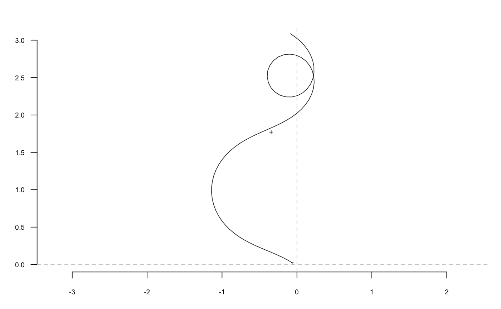
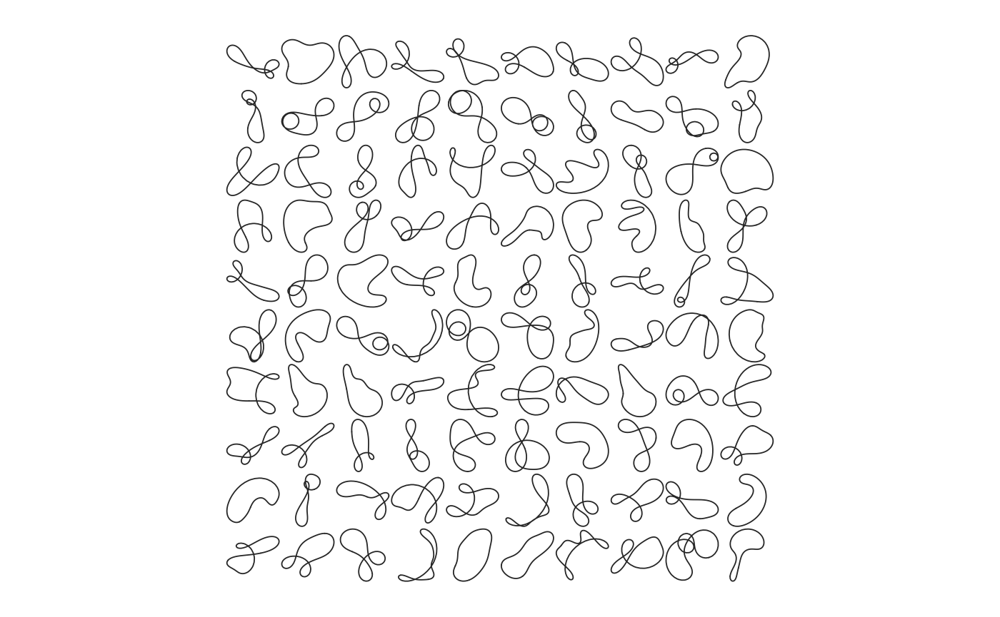

tfourier_shape calculates a 'Fourier tangent angle shape' given
Fourier coefficients (see Details) or can generate some 'tfourier'
shapes.
tfourier_shape(an, bn, ao = 0, nb.h, nb.pts = 80, alpha = 2, plot = TRUE)
| an |
|
|---|---|
| bn |
|
| ao |
|
| nb.h |
|
| nb.pts |
|
| alpha |
|
| plot |
|
A matrix of (x; y) coordinates.
Claude, J. (2008) Morphometrics with R, Use R! series, Springer 316 pp.
Other tfourier: tfourier_i,
tfourier
#> x y #> [1,] -0.068536123 0.03816985 #> [2,] 0.010421770 0.02861438 #> [3,] -0.063790622 0.05721817 #> [4,] -0.140579972 0.07793172 #> [5,] -0.183238239 0.14505793 #> [6,] -0.247181702 0.19235370 #> [7,] -0.320133871 0.22403393 #> [8,] -0.368197883 0.28740195 #> [9,] -0.418456077 0.34904422 #> [10,] -0.483991433 0.39410832 #> [11,] -0.527015593 0.46100060 #> [12,] -0.558482563 0.53404501 #> [13,] -0.615378810 0.58961904 #> [14,] -0.666002527 0.65096148 #> [15,] -0.703250243 0.72123426 #> [16,] -0.768466384 0.76675910 #> [17,] -0.843721723 0.79249409 #> [18,] -0.920086430 0.81472216 #> [19,] -0.990492372 0.77772677 #> [20,] -1.035089701 0.71187289 #> [21,] -1.107991534 0.68007700 #> [22,] -1.173409209 0.63484224 #> [23,] -1.172271234 0.55531639 #> [24,] -1.245117865 0.52339423 #> [25,] -1.169306190 0.54744097 #> [26,] -1.166890972 0.46794366 #> [27,] -1.134401707 0.39534818 #> [28,] -1.068636587 0.35062006 #> [29,] -1.007856315 0.29932275 #> [30,] -0.955597746 0.23936695 #> [31,] -0.898595892 0.18390125 #> [32,] -0.832707879 0.13935435 #> [33,] -0.769939719 0.09050956 #> [34,] -0.718591641 0.02977217 #> [35,] -0.653105984 -0.01536412 #> [36,] -0.579711689 -0.04600613 #> [37,] -0.541356302 -0.11568052 #> [38,] -0.489158357 -0.17568911 #> [39,] -0.526675851 -0.10555999 #> [40,] -0.483094002 -0.17209027 #> [41,] -0.411233403 -0.20617413 #> [42,] -0.384991638 -0.28125426 #> [43,] -0.346581120 -0.35089827 #> [44,] -0.281483742 -0.39659277 #> [45,] -0.223918101 -0.45147312 #> [46,] -0.163346561 -0.50301673 #> [47,] -0.086698985 -0.52424890 #> [48,] -0.009264515 -0.54240265 #> [49,] 0.061119622 -0.57943951 #> [50,] 0.129392040 -0.62023819 #> [51,] 0.196505793 -0.66291605 #> [52,] 0.256624481 -0.71498715 #> [53,] 0.315395180 -0.76857503 #> [54,] 0.379092808 -0.81620137 #> [55,] 0.442596932 -0.86408541 #> [56,] 0.501564226 -0.91745689 #> [57,] 0.558878373 -0.97259983 #> [58,] 0.616862632 -1.02703770 #> [59,] 0.683127662 -1.07102180 #> [60,] 0.761505112 -1.05750770 #> [61,] 0.789105491 -0.98291631 #> [62,] 0.836639557 -0.91914980 #> [63,] 0.850183366 -0.99752212 #> [64,] 0.787935223 -0.94801632 #> [65,] 0.760460379 -0.87337860 #> [66,] 0.699791505 -0.82194959 #> [67,] 0.638226839 -0.77159636 #> [68,] 0.596708767 -0.70375901 #> [69,] 0.552733618 -0.63748804 #> [70,] 0.492705339 -0.58531274 #> [71,] 0.437325328 -0.52822763 #> [72,] 0.414799359 -0.45195026 #> [73,] 0.364582422 -0.39027438 #> [74,] 0.378601540 -0.46856307 #> [75,] 0.344461362 -0.39672921 #> [76,] 0.268368346 -0.37358815 #> [77,] 0.341471182 -0.34225716 #> [78,] 0.264568188 -0.36254472 #> [79,] 0.260420375 -0.28311896 #> [80,] 0.189614910 -0.24689408tfourier_shape()#> x y #> [1,] -0.061107467 0.02275098 #> [2,] -0.129700878 0.06300765 #> [3,] -0.200483265 0.09927761 #> [4,] -0.272703814 0.13259199 #> [5,] -0.345756877 0.16403886 #> [6,] -0.419133889 0.19472224 #> [7,] -0.492374689 0.22572935 #> [8,] -0.565021943 0.25810268 #> [9,] -0.636581627 0.29281388 #> [10,] -0.706492034 0.33073736 #> [11,] -0.774103344 0.37262252 #> [12,] -0.838669399 0.41906475 #> [13,] -0.899352765 0.47047666 #> [14,] -0.955243344 0.52706199 #> [15,] -1.005389784 0.58879521 #> [16,] -1.048841638 0.65541046 #> [17,] -1.084699005 0.72640275 #> [18,] -1.112165205 0.80104365 #> [19,] -1.130597366 0.87841232 #> [20,] -1.139549622 0.95744087 #> [21,] -1.138804176 1.03697137 #> [22,] -1.128386727 1.11582017 #> [23,] -1.108564459 1.19284441 #> [24,] -1.079826875 1.26700509 #> [25,] -1.042851687 1.33742165 #> [26,] -0.998459653 1.40341409 #> [27,] -0.947563285 1.46453050 #> [28,] -0.891114742 1.52055922 #> [29,] -0.830057911 1.57152705 #> [30,] -0.765288849 1.61768574 #> [31,] -0.697627565 1.65949012 #> [32,] -0.627802850 1.69757115 #> [33,] -0.556450659 1.73270690 #> [34,] -0.484125523 1.76579361 #> [35,] -0.411323776 1.79781799 #> [36,] -0.338516805 1.82983050 #> [37,] -0.266192145 1.86291825 #> [38,] -0.194899800 1.89817527 #> [39,] -0.125300585 1.93666690 #> [40,] -0.058212450 1.97938502 #> [41,] 0.005350331 2.02719117 #> [42,] 0.064151508 2.08074561 #> [43,] 0.116728287 2.14042256 #> [44,] 0.161416155 2.20621503 #> [45,] 0.196411063 2.27763640 #> [46,] 0.219875107 2.35363045 #> [47,] 0.230087857 2.43250602 #> [48,] 0.225639193 2.51191549 #> [49,] 0.205651147 2.58889688 #> [50,] 0.170006768 2.65999634 #> [51,] 0.119555090 2.72148036 #> [52,] 0.056255261 2.76963415 #> [53,] -0.016777847 2.80112734 #> [54,] -0.095357593 2.81341063 #> [55,] -0.174455460 2.80509298 #> [56,] -0.248571661 2.77624087 #> [57,] -0.312216018 2.72854337 #> [58,] -0.360444827 2.66530068 #> [59,] -0.389382605 2.59121788 #> [60,] -0.396652681 2.51201686 #> [61,] -0.381649980 2.43391069 #> [62,] -0.345612216 2.36300980 #> [63,] -0.291477811 2.30474213 #> [64,] -0.223553448 2.26336657 #> [65,] -0.147043909 2.24164225 #> [66,] -0.067515646 2.24068776 #> [67,] 0.009629829 2.26003283 #> [68,] 0.079605907 2.29783500 #> [69,] 0.138567168 2.35121314 #> [70,] 0.183789923 2.41663911 #> [71,] 0.213709557 2.49033084 #> [72,] 0.227836898 2.56860008 #> [73,] 0.226587914 2.64812427 #> [74,] 0.211065120 2.72612875 #> [75,] 0.182826334 2.80048079 #> [76,] 0.143669069 2.86970770 #> [77,] 0.095449480 2.93295742 #> [78,] 0.039945429 2.98992193 #> [79,] -0.021234568 3.04074185 #> [80,] -0.086700291 3.08590704tfourier_shape(nb.h=6, alpha=0.4, nb.pts=500)#> x y #> [1,] -0.002728499 -0.0119816470 #> [2,] -0.007962996 -0.0234336021 #> [3,] -0.014895526 -0.0339448936 #> [4,] -0.023423537 -0.0432088153 #> [5,] -0.033374120 -0.0509245863 #> [6,] -0.044503008 -0.0568148393 #> [7,] -0.056498224 -0.0606439399 #> [8,] -0.068988754 -0.0622357596 #> [9,] -0.081558167 -0.0614893820 #> [10,] -0.093762623 -0.0583912374 #> [11,] -0.105152191 -0.0530223489 #> [12,] -0.115294014 -0.0455597326 #> [13,] -0.123795537 -0.0362714959 #> [14,] -0.130325935 -0.0255057576 #> [15,] -0.134633991 -0.0136741102 #> [16,] -0.136560940 -0.0012308755 #> [17,] -0.136047314 0.0113501981 #> [18,] -0.133133342 0.0235999325 #> [19,] -0.127953118 0.0350765396 #> [20,] -0.120723264 0.0453855856 #> [21,] -0.111727281 0.0541957794 #> [22,] -0.101297088 0.0612497353 #> [23,] -0.089793328 0.0663693779 #> [24,] -0.077585992 0.0694561508 #> [25,] -0.065036674 0.0704866151 #> [26,] -0.052483494 0.0695043312 #> [27,] -0.040229317 0.0666090965 #> [28,] -0.028533581 0.0619446580 #> [29,] -0.017607655 0.0556859552 #> [30,] -0.007613430 0.0480267974 #> [31,] 0.001335367 0.0391686795 #> [32,] 0.009169754 0.0293112150 #> [33,] 0.015860593 0.0186444491 #> [34,] 0.021412830 0.0073431263 #> [35,] 0.025859387 -0.0044371688 #> [36,] 0.029255159 -0.0165621824 #> [37,] 0.031671410 -0.0289197289 #> [38,] 0.033190794 -0.0414192769 #> [39,] 0.033903108 -0.0539906664 #> [40,] 0.033901816 -0.0665822200 #> [41,] 0.033281312 -0.0791584754 #> [42,] 0.032134858 -0.0916977285 #> [43,] 0.030553096 -0.1041895360 #> [44,] 0.028623039 -0.1166322891 #> [45,] 0.026427419 -0.1290309374 #> [46,] 0.024044302 -0.1413949164 #> [47,] 0.021546869 -0.1537363124 #> [48,] 0.019003304 -0.1660682832 #> [49,] 0.016476715 -0.1784037430 #> [50,] 0.014025051 -0.1907543126 #> [51,] 0.011700999 -0.2031295302 #> [52,] 0.009551839 -0.2155363161 #> [53,] 0.007619254 -0.2279786768 #> [54,] 0.005939120 -0.2404576340 #> [55,] 0.004541277 -0.2529713569 #> [56,] 0.003449319 -0.2655154731 #> [57,] 0.002680396 -0.2780835272 #> [58,] 0.002245088 -0.2906675541 #> [59,] 0.002147322 -0.3032587282 #> [60,] 0.002384384 -0.3158480502 #> [61,] 0.002946996 -0.3284270284 #> [62,] 0.003819478 -0.3409883182 #> [63,] 0.004979969 -0.3535262799 #> [64,] 0.006400713 -0.3660374234 #> [65,] 0.008048364 -0.3785207112 #> [66,] 0.009884317 -0.3909776971 #> [67,] 0.011865040 -0.4034124855 #> [68,] 0.013942380 -0.4158314986 #> [69,] 0.016063849 -0.4282430494 #> [70,] 0.018172887 -0.4406567186 #> [71,] 0.020209101 -0.4530825409 #> [72,] 0.022108499 -0.4655300110 #> [73,] 0.023803755 -0.4780069229 #> [74,] 0.025224525 -0.4905180635 #> [75,] 0.026297864 -0.5030637866 #> [76,] 0.026948794 -0.5156385039 #> [77,] 0.027101074 -0.5282291367 #> [78,] 0.026678210 -0.5408135879 #> [79,] 0.025604761 -0.5533593016 #> [80,] 0.023807966 -0.5658219960 #> [81,] 0.021219700 -0.5781446624 #> [82,] 0.017778762 -0.5902569358 #> [83,] 0.013433425 -0.6020749422 #> [84,] 0.008144211 -0.6135017282 #> [85,] 0.001886743 -0.6244283615 #> [86,] -0.005345449 -0.6347357677 #> [87,] -0.013538355 -0.6442973329 #> [88,] -0.022655338 -0.6529822534 #> [89,] -0.032635629 -0.6606595579 #> [90,] -0.043393648 -0.6672026659 #> [91,] -0.054819320 -0.6724942859 #> [92,] -0.066779518 -0.6764314026 #> [93,] -0.079120666 -0.6789300628 #> [94,] -0.091672480 -0.6799296500 #> [95,] -0.104252735 -0.6793963447 #> [96,] -0.116672833 -0.6773254997 #> [97,] -0.128743911 -0.6737427231 #> [98,] -0.140283144 -0.6687035425 #> [99,] -0.151119867 -0.6622916272 #> [100,] -0.161101178 -0.6546156480 #> [101,] -0.170096673 -0.6458049565 #> [102,] -0.178002072 -0.6360043495 #> [103,] -0.184741551 -0.6253682482 #> [104,] -0.190268725 -0.6140546472 #> [105,] -0.194566310 -0.6022191924 #> [106,] -0.197644590 -0.5900097119 #> [107,] -0.199538916 -0.5775614688 #> [108,] -0.200306478 -0.5649933316 #> [109,] -0.200022664 -0.5524049768 #> [110,] -0.198777288 -0.5398751618 #> [111,] -0.196670962 -0.5274610322 #> [112,] -0.193811835 -0.5151983807 #> [113,] -0.190312894 -0.5031027355 #> [114,] -0.186289917 -0.4911711436 #> [115,] -0.181860162 -0.4793845201 #> [116,] -0.177141761 -0.4677104500 #> [117,] -0.172253778 -0.4561063622 #> [118,] -0.167316820 -0.4445230262 #> [119,] -0.162454037 -0.4329083561 #> [120,] -0.157792328 -0.4212115320 #> [121,] -0.153463518 -0.4093874621 #> [122,] -0.149605226 -0.3974016034 #> [123,] -0.146361133 -0.3852351296 #> [124,] -0.143880306 -0.3728903847 #> [125,] -0.142315258 -0.3603964722 #> [126,] -0.141818392 -0.3478147256 #> [127,] -0.142536577 -0.3352436701 #> [128,] -0.144603662 -0.3228229461 #> [129,] -0.148130909 -0.3107355248 #> [130,] -0.153195549 -0.2992074439 #> [131,] -0.159827952 -0.2885042454 #> [132,] -0.167998244 -0.2789233502 #> [133,] -0.177603561 -0.2707817835 #> [134,] -0.188457468 -0.2643990000 #> [135,] -0.200283316 -0.2600750497 #> [136,] -0.212713391 -0.2580649596 #> [137,] -0.225295563 -0.2585509279 #> [138,] -0.237508704 -0.2616146527 #> [139,] -0.248787395 -0.2672127209 #> [140,] -0.258555422 -0.2751583408 #> [141,] -0.266266348 -0.2851126788 #> [142,] -0.271448179 -0.2965885602 #> [143,] -0.273748055 -0.3089682933 #> [144,] -0.272972165 -0.3215359192 #> [145,] -0.269115902 -0.3335224308 #> [146,] -0.262379813 -0.3441606792 #> [147,] -0.253168114 -0.3527450733 #> [148,] -0.242068375 -0.3586900736 #> [149,] -0.229813211 -0.3615811245 #> [150,] -0.217227064 -0.3612121704 #> [151,] -0.205163173 -0.3576052673 #> [152,] -0.194437150 -0.3510098392 #> [153,] -0.185764106 -0.3418815579 #> [154,] -0.179705779 -0.3308432651 #> [155,] -0.176632853 -0.3186324359 #> [156,] -0.176705607 -0.3060410924 #> [157,] -0.179873806 -0.2938546351 #> [158,] -0.185894430 -0.2827957332 #> [159,] -0.194363965 -0.2734783186 #> [160,] -0.204760671 -0.2663751002 #> [161,] -0.216491695 -0.2618001351 #> [162,] -0.228939993 -0.2599061688 #> [163,] -0.241506818 -0.2606949278 #> [164,] -0.253646612 -0.2640374743 #> [165,] -0.264892481 -0.2697011877 #> [166,] -0.274871698 -0.2773798897 #> [167,] -0.283311785 -0.2867239871 #> [168,] -0.290038534 -0.2973681436 #> [169,] -0.294967795 -0.3089547572 #> [170,] -0.298093041 -0.3211523004 #> [171,] -0.299470656 -0.3336682663 #> [172,] -0.299204599 -0.3462570089 #> [173,] -0.297431775 -0.3587231359 #> [174,] -0.294309028 -0.3709213191 #> [175,] -0.290002292 -0.3827534469 #> [176,] -0.284678153 -0.3941640020 #> [177,] -0.278497781 -0.4051344275 #> [178,] -0.271613056 -0.4156770922 #> [179,] -0.264164572 -0.4258292998 #> [180,] -0.256281202 -0.4356476344 #> [181,] -0.248080830 -0.4452027971 #> [182,] -0.239671947 -0.4545749854 #> [183,] -0.231155773 -0.4638497900 #> [184,] -0.222628656 -0.4731145354 #> [185,] -0.214184509 -0.4824549638 #> [186,] -0.205917079 -0.4919521648 #> [187,] -0.197921889 -0.5016796600 #> [188,] -0.190297699 -0.5117005851 #> [189,] -0.183147361 -0.5220649419 #> [190,] -0.176577982 -0.5328069387 #> [191,] -0.170700311 -0.5439424765 #> [192,] -0.165627310 -0.5554668805 #> [193,] -0.161471932 -0.5673530092 #> [194,] -0.158344130 -0.5795498974 #> [195,] -0.156347221 -0.5919820967 #> [196,] -0.155573746 -0.6045498714 #> [197,] -0.156101049 -0.6171303792 #> [198,] -0.157986819 -0.6295799213 #> [199,] -0.161264879 -0.6417372871 #> [200,] -0.165941537 -0.6534281424 #> [201,] -0.171992755 -0.6644703338 #> [202,] -0.179362419 -0.6746799019 #> [203,] -0.187961889 -0.6838775289 #> [204,] -0.197670949 -0.6918950955 #> [205,] -0.208340185 -0.6985819941 #> [206,] -0.219794720 -0.7038108440 #> [207,] -0.231839126 -0.7074822867 #> [208,] -0.244263291 -0.7095285909 #> [209,] -0.256848887 -0.7099158755 #> [210,] -0.269376127 -0.7086448520 #> [211,] -0.281630413 -0.7057500830 #> [212,] -0.293408564 -0.7012978497 #> [213,] -0.304524295 -0.6953828043 #> [214,] -0.314812729 -0.6881236480 #> [215,] -0.324133781 -0.6796581173 #> [216,] -0.332374329 -0.6701375822 #> [217,] -0.339449181 -0.6597215517 #> [218,] -0.345300911 -0.6485723593 #> [219,] -0.349898691 -0.6368502587 #> [220,] -0.353236306 -0.6247091076 #> [221,] -0.355329530 -0.6122927620 #> [222,] -0.356213083 -0.5997322461 #> [223,] -0.355937362 -0.5871437115 #> [224,] -0.354565125 -0.5746271548 #> [225,] -0.352168283 -0.5622658291 #> [226,] -0.348824917 -0.5501262603 #> [227,] -0.344616617 -0.5382587655 #> [228,] -0.339626186 -0.5266983663 #> [229,] -0.333935758 -0.5154659911 #> [230,] -0.327625309 -0.5045698700 #> [231,] -0.320771564 -0.4940070385 #> [232,] -0.313447264 -0.4837648778 #> [233,] -0.305720746 -0.4738226379 #> [234,] -0.297655796 -0.4641529012 #> [235,] -0.289311730 -0.4547229603 #> [236,] -0.280743643 -0.4454960910 #> [237,] -0.272002792 -0.4364327164 #> [238,] -0.263137064 -0.4274914594 #> [239,] -0.254191487 -0.4186300894 #> [240,] -0.245208768 -0.4098063718 #> [241,] -0.236229809 -0.4009788283 #> [242,] -0.227294189 -0.3921074186 #> [243,] -0.218440589 -0.3831541514 #> [244,] -0.209707153 -0.3740836319 #> [245,] -0.201131762 -0.3648635513 #> [246,] -0.192752220 -0.3554651201 #> [247,] -0.184606357 -0.3458634462 #> [248,] -0.176732031 -0.3360378565 #> [249,] -0.169167048 -0.3259721596 #> [250,] -0.161948999 -0.3156548440 #> [251,] -0.155115026 -0.3050792102 #> [252,] -0.148701518 -0.2942434294 #> [253,] -0.142743770 -0.2831505277 #> [254,] -0.137275597 -0.2718082922 #> [255,] -0.132328931 -0.2602290988 #> [256,] -0.127933417 -0.2484296631 #> [257,] -0.124116020 -0.2364307173 #> [258,] -0.120900653 -0.2242566200 #> [259,] -0.118307857 -0.2119349062 #> [260,] -0.116354517 -0.1994957870 #> [261,] -0.115053654 -0.1869716111 #> [262,] -0.114414278 -0.1743963010 #> [263,] -0.114441312 -0.1618047763 #> [264,] -0.115135595 -0.1492323781 #> [265,] -0.116493956 -0.1367143080 #> [266,] -0.118509358 -0.1242850932 #> [267,] -0.121171103 -0.1119780896 #> [268,] -0.124465098 -0.0998250314 #> [269,] -0.128374162 -0.0878556354 #> [270,] -0.132878379 -0.0760972656 #> [271,] -0.137955465 -0.0645746608 #> [272,] -0.143581165 -0.0533097274 #> [273,] -0.149729645 -0.0423213966 #> [274,] -0.156373889 -0.0316255444 #> [275,] -0.163486073 -0.0212349692 #> [276,] -0.171037936 -0.0111594249 #> [277,] -0.179001107 -0.0014057009 #> [278,] -0.187347416 0.0080222548 #> [279,] -0.196049165 0.0171231774 #> [280,] -0.205079364 0.0258982981 #> [281,] -0.214411930 0.0343511340 #> [282,] -0.224021854 0.0424872618 #> [283,] -0.233885329 0.0503140809 #> [284,] -0.243979842 0.0578405697 #> [285,] -0.254284244 0.0650770413 #> [286,] -0.264778786 0.0720349011 #> [287,] -0.275445132 0.0787264098 #> [288,] -0.286266352 0.0851644538 #> [289,] -0.297226900 0.0913623256 #> [290,] -0.308312572 0.0973335151 #> [291,] -0.319510460 0.1030915125 #> [292,] -0.330808895 0.1086496232 #> [293,] -0.342197386 0.1140207960 #> [294,] -0.353666556 0.1192174631 #> [295,] -0.365208081 0.1242513916 #> [296,] -0.376814621 0.1291335480 #> [297,] -0.388479766 0.1338739722 #> [298,] -0.400197974 0.1384816632 #> [299,] -0.411964522 0.1429644737 #> [300,] -0.423775449 0.1473290147 #> [301,] -0.435627517 0.1515805674 #> [302,] -0.447518163 0.1557230040 #> [303,] -0.459445453 0.1597587149 #> [304,] -0.471408048 0.1636885428 #> [305,] -0.483405153 0.1675117226 #> [306,] -0.495436473 0.1712258267 #> [307,] -0.507502161 0.1748267151 #> [308,] -0.519602759 0.1783084908 #> [309,] -0.531739126 0.1816634586 #> [310,] -0.543912361 0.1848820889 #> [311,] -0.556123700 0.1879529860 #> [312,] -0.568374409 0.1908628615 #> [313,] -0.580665640 0.1935965128 #> [314,] -0.592998285 0.1961368100 #> [315,] -0.605372782 0.1984646907 #> [316,] -0.617788917 0.2005591663 #> [317,] -0.630245575 0.2023973434 #> [318,] -0.642740478 0.2039544621 #> [319,] -0.655269883 0.2052039584 #> [320,] -0.667828249 0.2061175540 #> [321,] -0.680407880 0.2066653817 #> [322,] -0.692998531 0.2068161522 #> [323,] -0.705586998 0.2065373709 #> [324,] -0.718156685 0.2057956138 #> [325,] -0.730687157 0.2045568708 #> [326,] -0.743153699 0.2027869660 #> [327,] -0.755526874 0.2004520637 #> [328,] -0.767772115 0.1975192681 #> [329,] -0.779849358 0.1939573238 #> [330,] -0.791712731 0.1897374197 #> [331,] -0.803310346 0.1848340997 #> [332,] -0.814584189 0.1792262754 #> [333,] -0.825470161 0.1728983336 #> [334,] -0.835898288 0.1658413240 #> [335,] -0.845793137 0.1580542067 #> [336,] -0.855074453 0.1495451290 #> [337,] -0.863658059 0.1403326957 #> [338,] -0.871457029 0.1304471865 #> [339,] -0.878383143 0.1199316661 #> [340,] -0.884348637 0.1088429282 #> [341,] -0.889268226 0.0972522048 #> [342,] -0.893061382 0.0852455735 #> [343,] -0.895654819 0.0729239947 #> [344,] -0.896985134 0.0604029129 #> [345,] -0.897001507 0.0478113698 #> [346,] -0.895668392 0.0352905860 #> [347,] -0.892968063 0.0229919906 #> [348,] -0.888902912 0.0110747017 #> [349,] -0.883497369 -0.0002975159 #> [350,] -0.876799314 -0.0109597521 #> [351,] -0.868880874 -0.0207498250 #> [352,] -0.859838505 -0.0295124040 #> [353,] -0.849792286 -0.0371032354 #> [354,] -0.838884388 -0.0433933054 #> [355,] -0.827276711 -0.0482727580 #> [356,] -0.815147746 -0.0516543887 #> [357,] -0.802688733 -0.0534765380 #> [358,] -0.790099256 -0.0537052340 #> [359,] -0.777582430 -0.0523354594 #> [360,] -0.765339877 -0.0493914632 #> [361,] -0.753566704 -0.0449260809 #> [362,] -0.742446697 -0.0390190801 #> [363,] -0.732147925 -0.0317745982 #> [364,] -0.722818961 -0.0233177871 #> [365,] -0.714585850 -0.0137908192 #> [366,] -0.707549947 -0.0033484399 #> [367,] -0.701786671 0.0078467322 #> [368,] -0.697345205 0.0196289477 #> [369,] -0.694249080 0.0318339153 #> [370,] -0.692497578 0.0443030559 #> [371,] -0.692067824 0.0568872737 #> [372,] -0.692917423 0.0694501319 #> [373,] -0.694987481 0.0818703607 #> [374,] -0.698205847 0.0940436655 #> [375,] -0.702490403 0.1058838428 #> [376,] -0.707752278 0.1173232442 #> [377,] -0.713898829 0.1283126544 #> [378,] -0.720836323 0.1388206707 #> [379,] -0.728472218 0.1488326797 #> [380,] -0.736717019 0.1583495326 #> [381,] -0.745485668 0.1673860147 #> [382,] -0.754698495 0.1759691992 #> [383,] -0.764281720 0.1841367578 #> [384,] -0.774167575 0.1919352898 #> [385,] -0.784294057 0.1994187110 #> [386,] -0.794604391 0.2066467284 #> [387,] -0.805046244 0.2136834131 #> [388,] -0.815570750 0.2205958652 #> [389,] -0.826131406 0.2274529613 #> [390,] -0.836682893 0.2343241588 #> [391,] -0.847179876 0.2412783350 #> [392,] -0.857575846 0.2483826313 #> [393,] -0.867822046 0.2557012801 #> [394,] -0.877866539 0.2632943935 #> [395,] -0.887653479 0.2712167058 #> [396,] -0.897122612 0.2795162696 #> [397,] -0.906209071 0.2882331202 #> [398,] -0.914843499 0.2973979376 #> [399,] -0.922952518 0.3070307482 #> [400,] -0.930459570 0.3171397241 #> [401,] -0.937286126 0.3277201472 #> [402,] -0.943353242 0.3387536113 #> [403,] -0.948583416 0.3502075411 #> [404,] -0.952902688 0.3620350984 #> [405,] -0.956242897 0.3741755363 #> [406,] -0.958543975 0.3865550460 #> [407,] -0.959756187 0.3990881130 #> [408,] -0.959842155 0.4116793732 #> [409,] -0.958778575 0.4242259274 #> [410,] -0.956557489 0.4366200390 #> [411,] -0.953187027 0.4487521127 #> [412,] -0.948691558 0.4605138294 #> [413,] -0.943111200 0.4718012927 #> [414,] -0.936500720 0.4825180450 #> [415,] -0.928927849 0.4925778093 #> [416,] -0.920471107 0.5019068360 #> [417,] -0.911217238 0.5104457546 #> [418,] -0.901258400 0.5181508674 #> [419,] -0.890689244 0.5249948559 #> [420,] -0.879604039 0.5309669113 #> [421,] -0.868093961 0.5360723332 #> [422,] -0.856244688 0.5403316707 #> [423,] -0.844134376 0.5437795045 #> [424,] -0.831832091 0.5464629778 #> [425,] -0.819396744 0.5484401905 #> [426,] -0.806876522 0.5497785661 #> [427,] -0.794308824 0.5505532866 #> [428,] -0.781720670 0.5508458732 #> [429,] -0.769129537 0.5507429673 #> [430,] -0.756544583 0.5503353419 #> [431,] -0.743968214 0.5497171453 #> [432,] -0.731397943 0.5489853549 #> [433,] -0.718828505 0.5482393954 #> [434,] -0.706254184 0.5475808502 #> [435,] -0.693671318 0.5471131817 #> [436,] -0.681080937 0.5469413552 #> [437,] -0.668491482 0.5471712569 #> [438,] -0.655921547 0.5479087870 #> [439,] -0.643402543 0.5492585162 #> [440,] -0.630981188 0.5513218048 #> [441,] -0.618721663 0.5541943070 #> [442,] -0.606707275 0.5579628211 #> [443,] -0.595041418 0.5627014945 #> [444,] -0.583847630 0.5684674580 #> [445,] -0.573268512 0.5752960366 #> [446,] -0.563463338 0.5831957700 #> [447,] -0.554604195 0.5921435526 #> [448,] -0.546870593 0.6020802834 #> [449,] -0.540442579 0.6129074650 #> [450,] -0.535492537 0.6244852155 #> [451,] -0.532175981 0.6366321363 #> [452,] -0.530621829 0.6491274088 #> [453,] -0.530922740 0.6617153664 #> [454,] -0.533126243 0.6741126160 #> [455,] -0.537227387 0.6860175664 #> [456,] -0.543163629 0.6971219914 #> [457,] -0.550812589 0.7071240232 #> [458,] -0.559993083 0.7157417812 #> [459,] -0.570469629 0.7227267088 #> [460,] -0.581960309 0.7278756410 #> [461,] -0.594147587 0.7310406783 #> [462,] -0.606691403 0.7321360908 #> [463,] -0.619243631 0.7311417077 #> [464,] -0.631462907 0.7281025454 #> [465,] -0.643028751 0.7231247464 #> [466,] -0.653654026 0.7163682120 #> [467,] -0.663094949 0.7080365740 #> [468,] -0.671158102 0.6983653384 #> [469,] -0.677704181 0.6876091279 #> [470,] -0.682648532 0.6760289455 #> [471,] -0.685958735 0.6638802921 #> [472,] -0.687649767 0.6514028069 #> [473,] -0.687777350 0.6388118996 #> [474,] -0.686430193 0.6262926187 #> [475,] -0.683721800 0.6139957965 #> [476,] -0.679782465 0.6020363291 #> [477,] -0.674751939 0.5904933209 #> [478,] -0.668773164 0.5794117384 #> [479,] -0.661987275 0.5688051868 #> [480,] -0.654530003 0.5586594328 #> [481,] -0.646529456 0.5489363439 #> [482,] -0.638105194 0.5395779763 #> [483,] -0.629368465 0.5305106285 #> [484,] -0.620423390 0.5216487518 #> [485,] -0.611368911 0.5128986876 #> [486,] -0.602301271 0.5041622618 #> [487,] -0.593316814 0.4953403145 #> [488,] -0.584514858 0.4863362709 #> [489,] -0.576000425 0.4770598676 #> [490,] -0.567886566 0.4674311341 #> [491,] -0.560296030 0.4573846923 #> [492,] -0.553362018 0.4468743783 #> [493,] -0.547227740 0.4358781123 #> [494,] -0.542044550 0.4244028447 #> [495,] -0.537968437 0.4124893009 #> [496,] -0.535154762 0.4002161408 #> [497,] -0.533751225 0.3877030554 #> [498,] -0.533889204 0.3751122577 #> [499,] -0.535673803 0.3626478110 #> [500,] -0.539173144 0.3505522814panel(Out(a2l(replicate(100, coo_force2close(tfourier_shape(nb.h=6, alpha=2, nb.pts=200, plot=FALSE)))))) # biological shapes